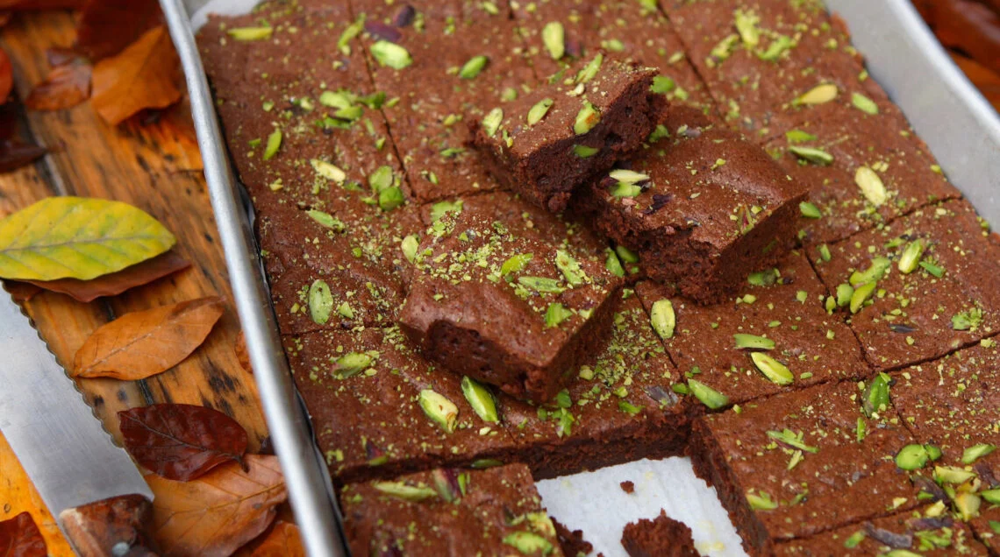

Pistachio Brownies

Description
These pistachio brownies, deeply chocolate brownies with both pistachios and semisweet chocolate chips, feature a
pistachio, white chocolate, and tahini topping. They are rich, chocolaty, nutty, and oh-so-good.
Ingredients
Brownies
- 1/2 cup unsalted butter, melted
- 1 cup firmly packed light brown sugar
- 3/4 teaspoon salt
- 2 large eggs, at room temperature
- 2/3 cup Dutch-processed cocoa powder
- 1/2 teaspoon espresso
- 2 teaspoons vanilla extract
- 1/2 teaspoon almond extract
- 3/4 cup all-purpose flour
- 1/2 teaspoon baking powder
- 3/4 cup chopped unsalted pistachios
- 1/2 cup semisweet chocolate chips
Pistachio Topping
- 1/2 cup white chocolate chips
- 1/4 cup heavy cream
- 3 tablespoons pistachio butter
- 1/2 teaspoon tahini
- 1/4 teaspoon vanilla extract
- 1 pinch salt
- 1 cup chopped pistachios
Steps
- Preheat the oven to 350 degrees F (180 degrees C). Line an 8x8-inch square pan with enough parchment paper
to have overhang on all sides.
- Whisk together melted butter, brown sugar, and salt in a large bowl until very well combined, about 1
minute. Add eggs and mix until thoroughly incorporated. Add cocoa powder, espresso powder, vanilla, and
almond extract, and whisk until mixture is completely smooth and free of lumps (mixture will be thick).
- Add in flour and baking powder and mix until just incorporated. Stir in chopped pistachios and semisweet
chocolate chips. Pour batter into the prepared pan and spread into an even layer.
- Bake brownies in the preheated oven until they look just set, 25 to 30 minutes. Remove pan from the oven and
place on a wire rack to cool completely, about 15 minutes.
- For the topping, combine white chocolate chips, heavy cream, pistachio butter, tahini, vanilla, and salt in
a microwave-safe bowl. Microwave for 30 seconds. Stir until mixture is completely smooth and combined. If
needed, microwave white chocolate mixture for an additional 10 to 15 more seconds to melt completely. Once
mixture is smooth and combined, set aside until brownies are cooled.
- Once brownies have cooled to room temperature, spread pistachio topping over brownies and sprinkle with
extra chopped pistachios. If desired, place brownies into the refrigerator until topping is set, at least 1
hour, to allow for cleaner cuts. Cut into 12 bars. Keep bars stored in an airtight container.
Home